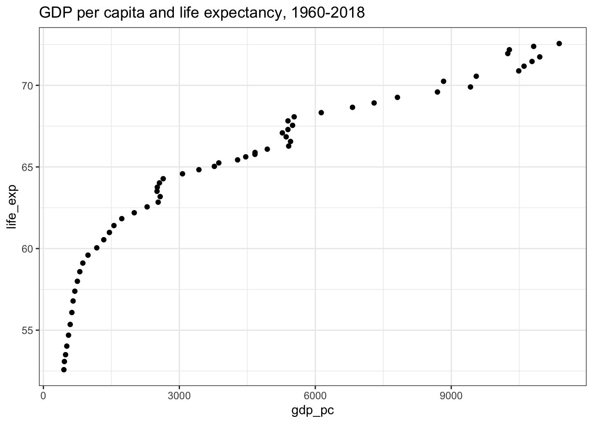
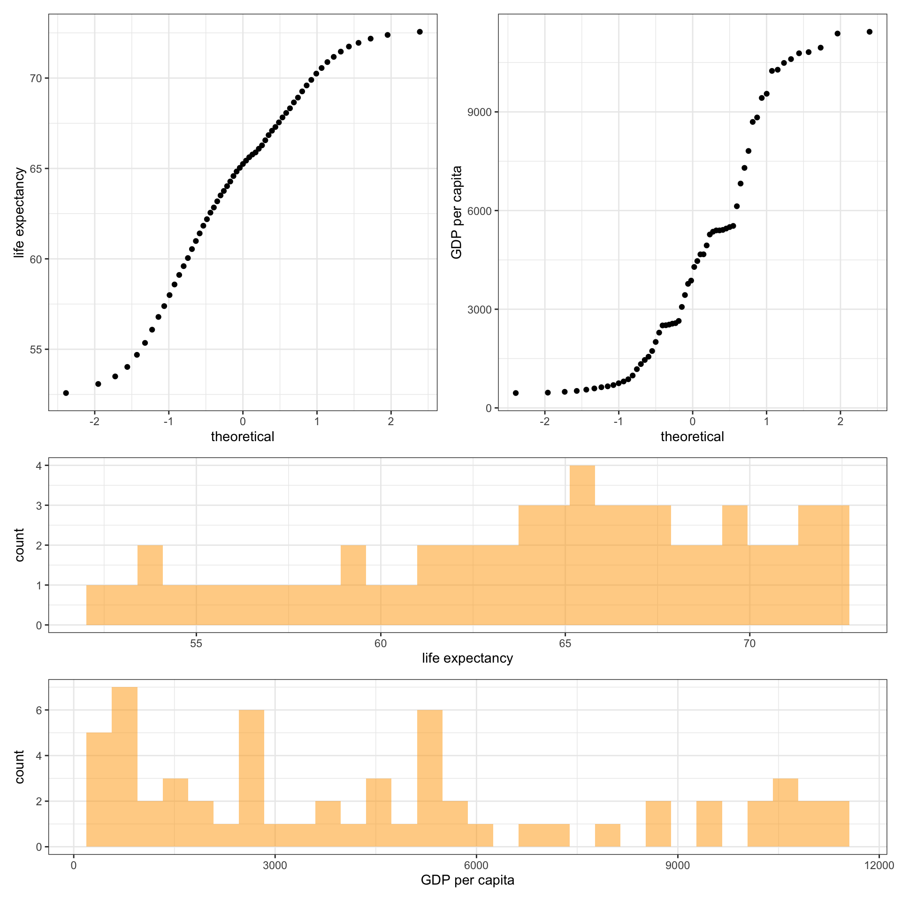

In recent posts, we discussed measures of central tendency and measures of dispersion. But hey, that is the start of a long journey. Finding relationships between variables is more interesting than describing the distribution of the data.
While studying, for example, the relationship between GDP and life expectancy, you might be interested to know whether there exists any relationship between the two indicators? is it a positive relationship or a negative relationship? and how strong the association is?
The above questions can be answered by computing the correlation coefficient between the two indicators. Depending on the type of data, different methods of correlation exist. In this post, you will learn the Pearson correlation coefficient and the Spearman correlation coefficient.
Pearson correlation is a parametric correlation test that measures the strength and direction of a linear relationship between two variables. This method is by far the most used and best method for calculating the association between variables that follow a normal distribution.
If the two variables are denoted by x and
y, the Pearson correlation coefficient is defined
as the ratio of covariance between x and
y to the product of standard deviation of
x and standard deviation of y.
\[r = (Covariance (x,y)) \space/\space (S.D.(x)×S.D.(y))\] Where,
\[{Covariance(x,y) = \frac{∑^n_{i=1}(x_i-\bar{x})(y_i-\bar{y})}{\ {n-1}}}\]
\[{S.D.(x) = \sqrt\frac{∑^n_{i=1}(x_i-\bar{x})^2}{\ {n-1}}}\]
\[{S.D.(y) = \sqrt\frac{∑^n_{i=1}(y_i-\bar{y})^2}{\ {n-1}}}\]
While the Pearson correlation is used to compute the degree of relationship between linearly related variables, the Spearman correlation indicates the monotonic relationship. The Pearson correlation is more appropriate for continuous data such as income, age, and height, while Spearman is more appropriate for ordinal data such as level of satisfaction, or level of happiness measured on a scale of 1 to 4.
In other words, the Pearson correlation is used to compute the extent of association when there is an equal interval between the adjacent units of the input variables. For instance, an increase in income from 100 to 101 is equal to the increase from 500 to 501 or an increase in age from 18 to 19 is same as an increase in 38 to 39, while the Spearman correlation is widely used with the ordinal data such that one level can be considered higher or lower than another level, but the magnitude of the difference is not necessarily known or the same. For instance, “Strong satisfaction” is higher than the “Somewhat satisfaction” and “Somewhat dissatisfaction” is higher than “Strong dissatisfaction”. However, it can not be quantified how much higher/lower is one level compared to the other level.
Moreover, since the Spearman correlation is based on the ranked values rather than the raw data and does not carry any assumption about the distribution of the data points, it can be used to measure the association between two continuous variables as well when the data are not distributed normally.
The Spearman ranked correlation can be expressed as follow:
\[rho = (Covariance (x',y')) \space/\space (S.D.(x')×S.D.(y'))\]
Where \(x'\) is rank(x) and \(y'\) is rank(y).
The correlation coefficient always lies between -1 and +1 and
can’t go outside of this range. Where the sign of the
correlation coefficient denotes the direction of the
relationship between two variables and the absolute value of the
correlation coefficient indicates the strength of association
between two variables. A + sign indicates the
positive relationship and a - sign indicates the
negative relationship. Furthermore, the closer the correlation
coefficient to -1 or +1, the stronger the relationship, and as
it goes toward 0 the relationship will be weaker.
How close is close enough to -1 or +1? I get too excited to see correlations beyond ±0.7. You can refer to below table while interpreting the correlation coefficient:
| Interpreting the Correlation Coefficient | |
| Correlation coefficient | Meaning |
|---|---|
| -1.0 | Perfect negative relationship |
| -0.7 | Strong negative relationship |
| -0.5 | Moderate negative relationship |
| -0.3 | Weak negative relationship |
| 0.0 | No relationship |
| 0.3 | Weak positive relationship |
| 0.5 | Moderate positive relationship |
| 0.7 | Strong positive relationship |
| 1.0 | Perfect positive relationship |
In the example below, we have a table of time series data of global GDP per capita and life expectancy from 1960 to 2018. Let’s find if if a higher GDP per capita can predict a higher life expectancy, and to what extent both indicators are correlated to each other.
| year | life_exp | gdp_pc |
|---|---|---|
| 1960 | 52.57821 | 452.1089 |
| 1961 | 53.07938 | 464.0490 |
| 1962 | 53.49664 | 489.5471 |
| 1963 | 54.02187 | 516.6151 |
| 1964 | 54.69176 | 554.5533 |
| 1965 | 55.35094 | 591.7181 |
| 1966 | 56.08243 | 628.7388 |
| 1967 | 56.78712 | 655.8735 |
| 1968 | 57.38625 | 693.9011 |
| 1969 | 57.99542 | 749.7251 |
| 1970 | 58.58291 | 803.9466 |
| 1971 | 59.11015 | 870.4373 |
| 1972 | 59.59617 | 984.5294 |
| 1973 | 60.04475 | 1178.0889 |
| 1974 | 60.54026 | 1332.8028 |
| 1975 | 60.98629 | 1457.1544 |
| 1976 | 61.40832 | 1556.8154 |
| 1977 | 61.83214 | 1729.5263 |
| 1978 | 62.19287 | 2005.1087 |
| 1979 | 62.55490 | 2288.6660 |
| 1980 | 62.84117 | 2532.7632 |
| 1981 | 63.18203 | 2576.6880 |
| 1982 | 63.50846 | 2507.3214 |
| 1983 | 63.75660 | 2513.1282 |
| 1984 | 64.02116 | 2560.9983 |
| 1985 | 64.27871 | 2643.7584 |
| 1986 | 64.57943 | 3069.9131 |
| 1987 | 64.83061 | 3431.5807 |
| 1988 | 65.03467 | 3772.4014 |
| 1989 | 65.24723 | 3870.4130 |
| 1990 | 65.43349 | 4285.2353 |
| 1991 | 65.61949 | 4464.6543 |
| 1992 | 65.77051 | 4668.2405 |
| 1993 | 65.88757 | 4669.5816 |
| 1994 | 66.08953 | 4939.8349 |
| 1995 | 66.27814 | 5412.3441 |
| 1996 | 66.55982 | 5453.3128 |
| 1997 | 66.84463 | 5357.0692 |
| 1998 | 67.08683 | 5272.6333 |
| 1999 | 67.29315 | 5395.9428 |
| 2000 | 67.54925 | 5498.3297 |
| 2001 | 67.82180 | 5396.8919 |
| 2002 | 68.07043 | 5533.4253 |
| 2003 | 68.32699 | 6131.2232 |
| 2004 | 68.65235 | 6820.6152 |
| 2005 | 68.92032 | 7297.1534 |
| 2006 | 69.26243 | 7811.9362 |
| 2007 | 69.59208 | 8694.9003 |
| 2008 | 69.89930 | 9423.7573 |
| 2009 | 70.24658 | 8830.3069 |
| 2010 | 70.55621 | 9551.3357 |
| 2011 | 70.88413 | 10488.3340 |
| 2012 | 71.17172 | 10605.2083 |
| 2013 | 71.46224 | 10781.8553 |
| 2014 | 71.74238 | 10952.3444 |
| 2015 | 71.94752 | 10246.5074 |
| 2016 | 72.18048 | 10281.9088 |
| 2017 | 72.38530 | 10817.4819 |
| 2018 | 72.56006 | 11381.6806 |
| 2019 | NA | 11435.6099 |
First thing first, let’s plot the data points to explore if there exists any relationship between the two indicators or not, and if the data points vary together. This is done through a scatter-plot.
library(ggplot2)
df %>%
ggplot(aes(x = gdp_pc, y = life_exp)) +
geom_point() +
theme_bw() +
labs(title = "GDP per capita and life expectancy, 1960-2018")## Warning: Removed 1 rows containing missing values (`geom_point()`).
Since the points are moving from the lower-left corner to the upper-right corner. Thus, a positive relationship exists1. However, it does not indicate the extent of the relationship between the variables.
Next, the normality test should be performed to check whether the data follow a normal distribution or not. This can be tested visually through qq-plot or histogram:
qq1 <- df %>% ggplot(aes(sample = life_exp)) +
geom_qq() + labs(y = "life expectancy")
qq2 <- df %>% ggplot(aes(sample = gdp_pc)) +
geom_qq() + labs(y = "GDP per capita")
hist1 <- df %>% ggplot(aes(x = life_exp)) +
geom_histogram(fill = "orange", alpha = 0.5) + labs(x = "life expectancy")
hist2 <- df %>% ggplot(aes(x = gdp_pc)) +
geom_histogram(fill = "orange", alpha = 0.5) + labs(x = "GDP per capita")
library(patchwork)
(qq1 | qq2) / (hist1 / hist2) &
theme_bw()## Warning: Removed 1 rows containing non-finite values (`stat_qq()`).## Warning: Removed 1 rows containing non-finite values (`stat_bin()`).
From the above plots it can easily be drawn that the data
points do not follow a normal distribution, but the more precise
way to check the normality of distribution is to use a
statistical test. The shapiro.test() function
performs the Shapiro-Wilk test of normality.
Shapiro-Wilk normality test
data: df$gdp_pc
W = 0.89361, p-value = 7.756e-05
Shapiro-Wilk normality test
data: df$life_exp
W = 0.9538, p-value = 0.02537The null hypothesis in the Shapiro-Wilk test is that the data are normally distributed. Therefore, a p-value of less than the significance level, or less than 0.05 indicates the data points are not normally distributed.
After testing the assumptions, you can decide to choose
either Pearson or Spearman correlation. The
cor.test() function can be used for evaluating the
association between variables.
Pearson's product-moment correlation
data: df$gdp_pc and df$life_exp
t = 18.088, df = 57, p-value < 2.2e-16
alternative hypothesis: true correlation is not equal to 0
95 percent confidence interval:
0.8730810 0.9535685
sample estimates:
cor
0.9228352
Spearman's rank correlation rho
data: df$gdp_pc and df$life_exp
S = 134, p-value < 2.2e-16
alternative hypothesis: true rho is not equal to 0
sample estimates:
rho
0.9960842 As shown above, both Pearson and Spearman’s correlation coefficient is above 0.9 which indicates a strong correlation between the two indicators. In other words, as GDP per capita increases life expectancy increases as well.
If there exists a positive correlation, the points will be moving from the lower-left to the upper-right corner. Similarly, if there is a negative correlation, the points will be moving down from the upper-left corner to the lower right corner. In case the points are scattered and do not form any pattern, it depicts that no relationship exists between the variables.↩︎